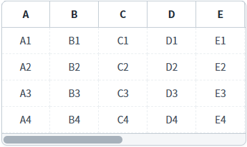
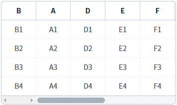

GridView의 스타일을 개인화하는 예제입니다. 이 예제는 브라우저의 'localStorage'를 활용하여 GridView 스타일을 개인화하는 기능을 구현하였습니다.
이 예제에 작성된 'GridView의 스타일'은 GridView의 컬럼 위치, 컬럼 너비, 틀 고정 위치, 컬럼 숨김 여부를 포함한 용어입니다.
화면 로딩 시 GridView에 저장된 개인화 스타일 적용하기
GridView의 스타일 저장하기
저장된 GridView의 스타일 적용하기
저장된 GridView의 스타일 삭제하기
화면 파일에 구성된 GridView 스타일로 적용하기
화면에 구성된 버튼의 기능을 요약하였습니다.
'GridView 초기화': 화면 파일에 구성된 GridView의 스타일로 적용합니다. 저장된 개인화 스타일은 삭제되지 않습니다.
'저장': 현재 GridView의 스타일을 저장합니다. 화면 로딩 시 저장된 스타일이 있으면 GridView에 적용됩니다.
'불러오기': 저장된 GridView의 스타일을 적용합니다.
'삭제': 저장된 GridView의 스타일을 삭제하고 GridView의 스타일을 초기화합니다.
화면 로딩 시 브라우저에 저장된 GridView의 스타일이 있으면, 해당 스타일이 적용됩니다.
1
STEP 1: GridView의 스타일을 조작합니다.
GridView에서 조작할 수 있는 대표적인 기능과 조작 방법은 다음과 같습니다.
컬럼의 위치 이동: 헤더 컬럼을 마우스로 '드래그-드롭'하여 위치를 변경합니다.
컬럼의 너비 변경: 헤더 컬럼의 오른쪽 테두리 선을 마우스로 '드래그-드롭'하여 너비를 변경합니다.
컬럼 숨기기: GridView의 '컨텐스트 메뉴'를 통해 컬럼을 숨깁니다. 컨텍스트 메뉴는 헤더 컬럼 또는 바디 컬럼에서 마우스의 오른쪽 버튼을 클릭하면 표시됩니다.
컬럼 틀고정: GridView의 '컨텐스트 메뉴'를 통해 컬럼의 틀을 고정합니다. 컨텍스트 메뉴는 헤더 컬럼 또는 바디 컬럼에서 마우스의 오른쪽 버튼을 클릭하면 표시됩니다.
Image 1.브라우저(Chrome) 실행 예시 - 조작 전

Image 2.브라우저(Chrome) 실행 예시 - 조작 후

2
STEP 2: GridView의 정보를 저장합니다.
'저장' 버튼을 클릭합니다.
3
STEP 3: GridView의 스타일을 초기화 합니다.
'GridView 초기화' 버튼을 클릭합니다. 화면 파일에 구성된 GridView의 스타일로 적용됩니다.
Image 3.브라우저(Chrome) 실행 예시 - 조작 전
4
STEP 4: 저장된 GridView의 스타일을 적용합니다.
'불러오기' 버튼을 클릭합니다. 저장된 GridView의 스타일이 적용됩니다.
또는 화면을 닫았다가 열거나 '새로고침'하면 저장된 GridView의 스타일이 적용됩니다.
Image 4.브라우저(Chrome) 실행 예시 - 조작 후
1
저장된 GridView의 스타일을 삭제합니다.
'삭제' 버튼을 클릭합니다. 저장된 GridView의 스타일이 삭제되고, GridView의 스타일이 초기화됩니다.
GridView의 'getCurrentGridStyle' 메소드와 '$p.local'의 'setItem' 메소드를 사용하여 스크립트를 작성합니다.
Example 1.Script
//현재 GridView의 스타일 정보 가져오기 var grd_style = grd_main.getCurrentGridStyle(); //localStorage에 키 'P00198_STYLE'로 GridView의 스타일 저장 $p.local.setItem("P00198_STYLE", grd_style);
'$p.local.setItem' 메소드는 브라우저의 'localStorage'를 사용합니다. 메소드의 첫 번째 인자로 전달되는 키가 그대로 사용되기 때문에 다른 프로그램과 중복되지 않도록 주의해야합니다.
GridView의 'getCurrentGridStyle' 메소드의 반환 값은 JSON 형식의 문자열이기 때문에, GridView의 스타일을 데이터베이스에 저장해서 개인화를 구현하기도 합니다.
브라우저의 'localStorage'는 브라우저에 종속되고, 저장 가능한 최대 용량이 정해져 있으므로 기능 구현 시 유의해야 합니다."
GridView의 'setGridStyle' 메소드와 '$p.local'의 'getItem' 메소드를 사용하여 스크립트를 작성합니다.
Example 2.Script
// localStorage에 키 'P00198_STYLE'로 저장된 GridView의 스타일 정보 가져오기 var grd_style = $p.local.getItem("P00198_STYLE"); // GridView에 스타일 적용 grd_main.setGridStyle(grd_style);
'$p.local'의 'removeItem' 메소드를 사용하여 스크립트를 작성합니다.
Example 3.Script
// localStorage에 키 'P00198_STYLE'로 저장된 GridView 스타일을 삭제합니다. $p.local.removeItem("P00198_STYLE");
getCurrentGridStyle()
setGridStyle( styleObj )
$p.local.setItem( keyName , value )
$p.local.getItem( keyName )
$p.local.removeItem( key )